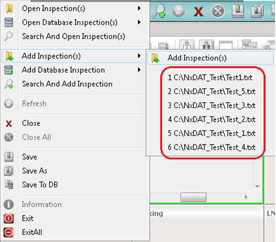
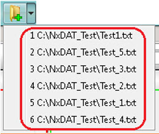

You can access
recently opened inspection files from the Calibre DefectReview window.
Procedure
- Select one of the following:
In the Calibre DefectReview menu
bar, select File > Add Inspection(s).
A sub-menu with a list of recently opened files appears as shown
in the Figure 1.
Figure 1. Add Inspection(s)
Menu
Click the arrow next to
the Add Inspection(s) icon
in the toolbar. A list of recently opened files appears as shown
in Figure 2.
Figure 2. Add Inspection(s)
Toolbar Dropdown Menu
- Select the desired file or
files from the available list.
Note: Recently-opened files for
each user are displayed in the recent file list.